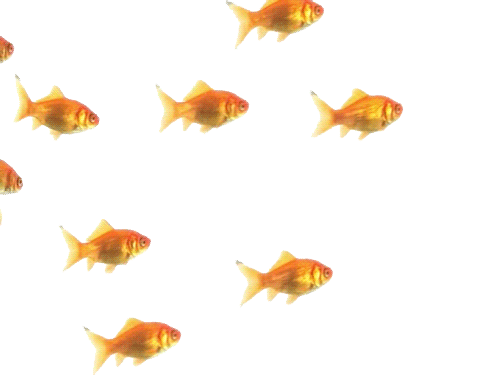
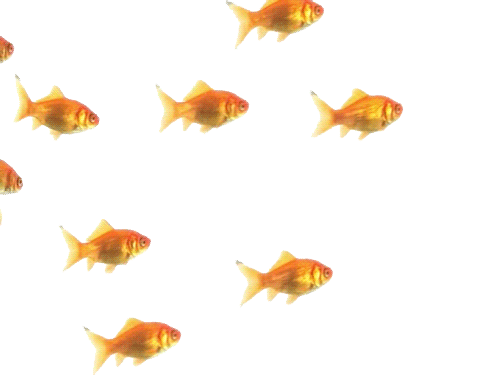

Elyse and I wandered into Stamford Town Center through the Macy's almost by accident, and I’m pretty sure that someone in the Macy's yelled "FUCK YOU" at us (we both heard it) for no clear reason. We kept walking. We rode up and down the glass elevator for the hell of it. We wandered into a vintage shop. Elyse bought some earrings; I bought an eight-dollar Hanes t-shirt with what appeared to be three ugly dragonflies hand-glitter-glued on by some kid. We found a photo booth with a terrible aquarium background and tried to take photos in it, but the photo booth refused to take either of our credit cards. I had a feeling that the photo booth hadn’t taken a credit card in the last ten years or so, and still I was disappointed. We rode up and down the glass elevator for the hell of it, again. Instead we took photos of: an abandoned frozen yogurt shop, an abandoned sushi shop right next to it, neon claw machines, something called TOYS N' MORE, a bag in a shop window screen printed with the words NO LONGER A PEOPLE PLEASER, the glass elevator, a fountain. All mall fountains smell exactly the same.
I had a really good time, but the mall kind of messed me up for a little, so much so that I said to Elyse hey can we leave I need to go touch some grass because all of this mall is making me weirdly super sad. We went outside and followed Google Maps in search of a park with a river, and instead found a chair graveyard next to a six lane highway.